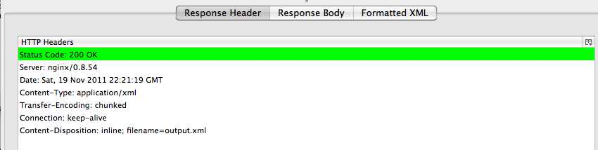

This endpoint displays detail information about the bookmark provied in the url. The {email} refers to the email address of a given user on the service node. The {urlid} refers to a locally unique identifier for the bookmark resource. When a bookmark is first created, this webservice creates a UUID that serves as this identifier.
The resulting response will not only display the url formation, but will display any categories associated with it.
Usage Example:
Below is a "pretty-printed" representation of the returned xhtml.
<?xml version="1.0" encoding="utf-8"?>
<html xmlns="http://www.w3.org/1999/xhtml">
<head>
<title>URL Detail</title>
</head>
<body>
<h1>URL Detail</h1>
<div class="user">
<div class="url">
<abbr class="date-added" title=""/>
<a rel="source" href="http://somewhere.com:80">http://somewhere.com:80</a>
<ul>Categories
<li class="category"><a href="http://likecite.com/v2/categories/News" rel="category">News</a></li><li class="category"><a href="http://likecite.com/v2/categories/Sports" rel="category">Sports</a></li></ul>
</div>
</div>
</body>
</html>
By appending an .xml to the endpoint url, a XML representation will be returned.
Usage Example:

Below is a "pretty-printed" representation of the returned xml.
<?xml version="1.0" encoding="utf-8"?>
<url>
<date-added>2011-11-19T15:29:59</date-added>
<source>http://somewhere.com:80</source>
<categories>
<category>
<uri>http://likecite.com/v2/categories/News</uri>
<name>News</name>
</category>
<category>
<uri>http://likecite.com/v2/categories/Sports</uri>
<name>Sports</name>
</category>
</categories>
<comments>
<comment>This is comment 1</comment>
<comment>This is comment 2</comment>
</comments>
</url>
PUTing to this endpoint will modify an existing bookmark. Bookmarks are looked up using their {urlid}and must belong to the existing user specified by the {email} url componant. Optional 'comment' and 'category' tags may be added to this xml to associate categories and comments with the new bookmark. Comments are associated with the bookmark via a one-to-may relationship; categories are associated with a bookmark via a many-to-many relationship. If a specified category does not exist, a new category will be created. This service validates the PUT XML for syntax and for adherence to the RelaxNG spec. The url, category, and comment data is validated upon submission. The url, comment, and category fields will be updated if the data provided differs from the existing data.
Usage Example:
A screenshot of the Django admin showing that the URL was updated.